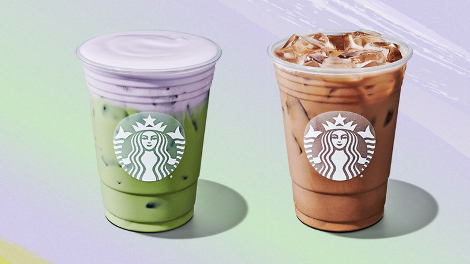

787 Coffee
Uses sustainably grown coffee beans in Puerto Rico, this place thrives on doing their best to caffeinate everyone. Locations at 70th and 1st ave and 80th and 2nd ave.
Birch Coffee
They source their coffee from several locations while making sure the quality and roasting practices are top-notch. Locations at 62nd and Lexington and 54th and 2nd ave.
Black Press Coffee
Their mission is to provide the community with great coffee along with providing reliable news. Located at 63rd and 3rd ave.
Blank Street Coffee
A trendy and asthetically appealing cafe that excels in customer service. Offers plenty of seasonal drinks. Locations at 71st and Lexington, 74th and 3rd ave, and 80th and Lexington.
Dunkin Donuts
A very popular cafe that aimed to provide energy for workers, hence the phrase that "America runs on Dunkin". A lot of customizables. Locations at 66th & Lex and 66th and 1st ave.
Starbucks
Another very popular cafe that has a fancy feel to it. Also a lot of drink and customization options. Locations at 68th and Lexington, 66th and 3rd ave, and 63rd and Lexington.
